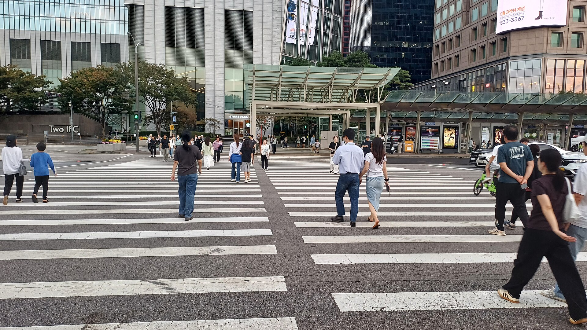
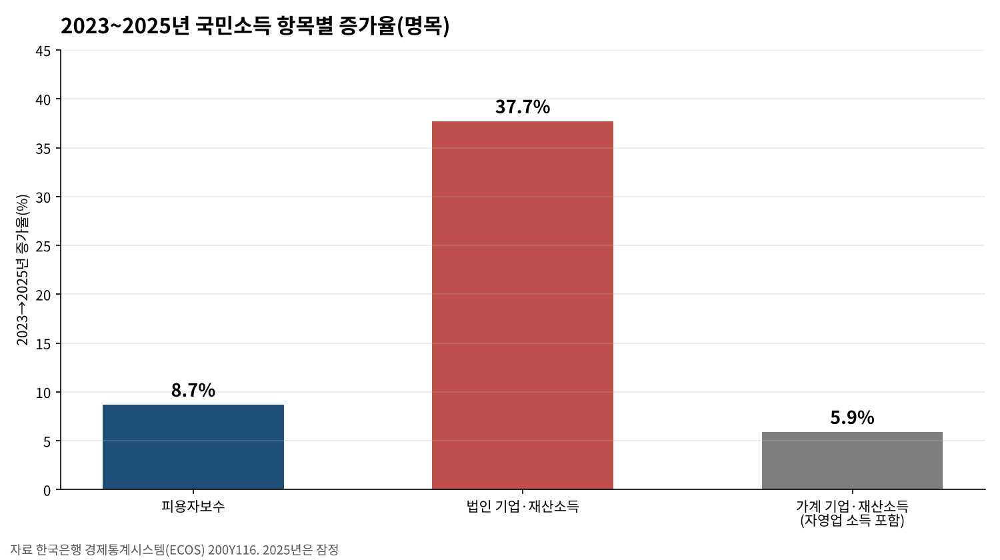
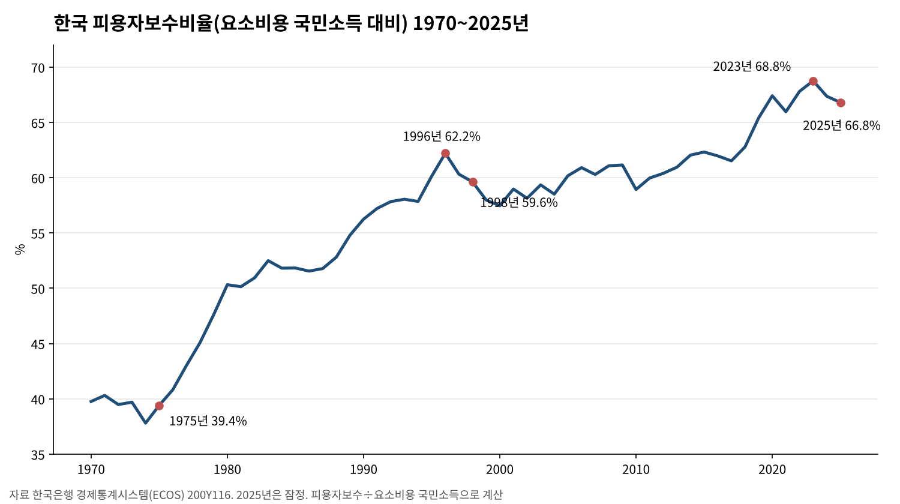
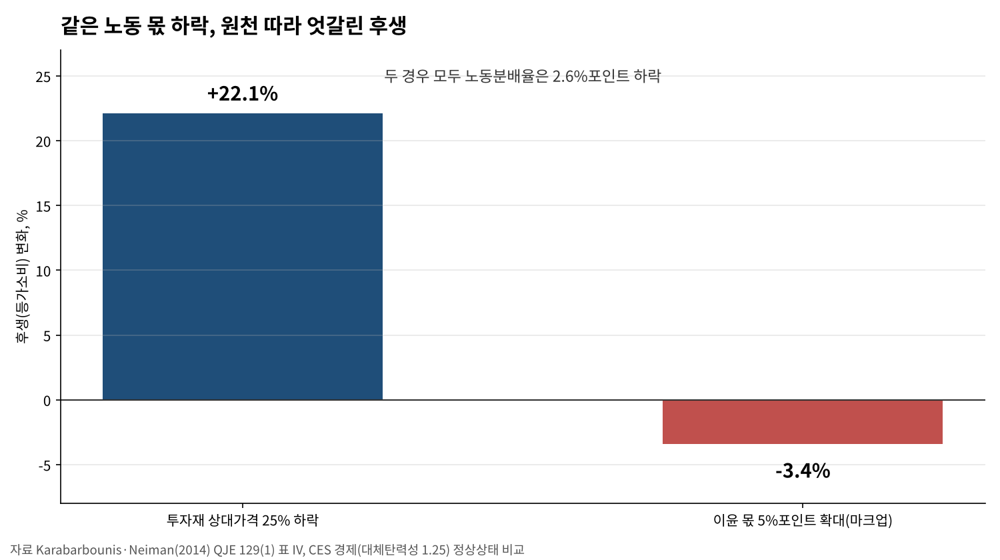
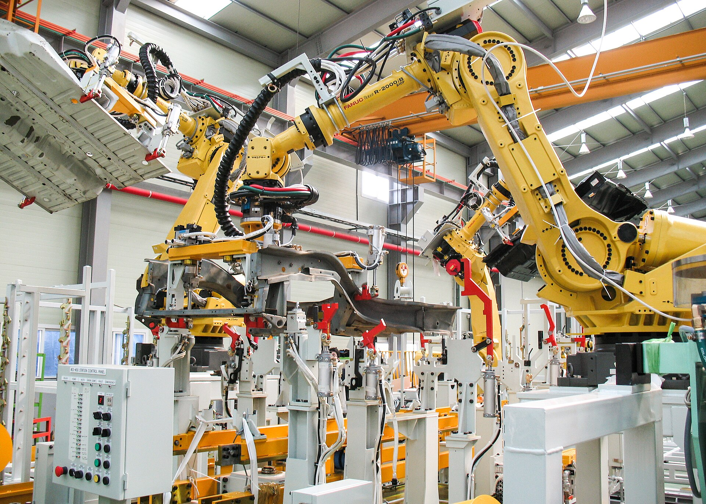
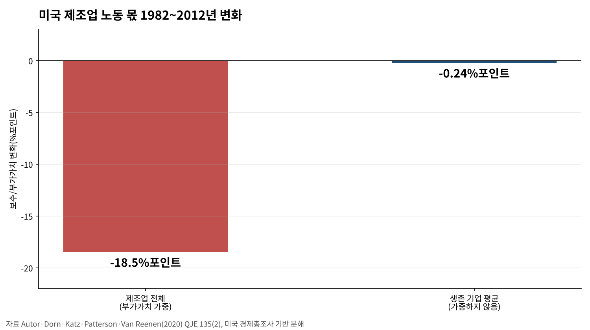
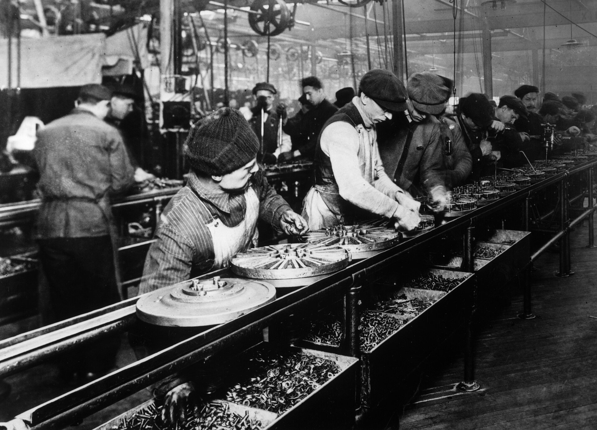

노동 몫 줄어든 원천, 기계값·이윤 폭·집값 셋으로 갈린다
피용자보수비율 2년 내리 하락해 66.8%
SSCI 다섯 편, 같은 하락도 원천 따라 후생 갈려
자영업 소득 빠진 통계, 원천 가릴 자료 필요
AI경제저널=김갑봉 기자 | 국민소득 가운데 일한 사람에게 돌아가는 몫이 2년 내리 줄었다. 해외 학계는 이 몫이 줄어든 원천을 기계값, 기업 이윤 폭, 자산값 셋으로 나눠 따져 왔다.
원천이 다르면 같은 하락이라도 살림살이에 미치는 영향이 갈린다. 국제 학술지(SSCI) 논문 다섯 편을 원문으로 읽고 한국은행 국민계정과 나란히 놓았다.

노동 몫, 2년 새 2%포인트 줄어
한국은행 경제통계시스템(ECOS) 국민계정을 보면 피용자보수비율은 2023년 68.8%였다. 2024년 67.4%, 2025년 66.8%로 2년 연속 내렸다.
이 비율은 요소비용 국민소득에서 피용자보수가 차지하는 몫이다. 흔히 노동소득분배율이라 부른다.
같은 2년 동안 피용자보수는 1167조9000억원에서 1269조8000억원으로 8.7% 늘었다. 법인 기업·재산소득은 230조4000억원에서 317조3000억원으로 37.7% 불었다.
자영업자 소득이 들어가는 가계 기업·재산소득은 281조1000억원에서 297조8000억원으로 5.9% 느는 데 그쳤다.

긴 흐름으로 보면 이 비율은 1975년 39.4%에서 1996년 62.2%까지 올랐다. 외환위기를 겪은 1998년에는 59.6%로 내려앉았다.
자영업자 소득은 피용자보수에 들어가지 않아, 임금노동자 비중이 커지면 비율도 따라 오른다.

기계값 25% 하락, 절반 설명
카라바부니스와 나이먼은 2014년 『쿼터리 저널 오브 이코노믹스(QJE)』에 59개국 자료를 엮어 실었다. 1975~2012년 세계 법인부문 노동분배율은 약 64%에서 약 59%로 내렸다.
59개국 가운데 42개국에서 노동분배율이 떨어졌다. 하락은 산업 구성이 바뀌어서가 아니라 대부분 산업 안에서 일어났다.
두 사람은 정보기술이 발전해 투자재 상대가격이 1975년 이후 약 25% 내린 점을 짚었다. 기업이 사람 대신 기계를 더 썼고, 이것이 하락의 절반쯤을 설명한다고 분석했다.
자본과 노동의 대체탄력성은 1.25로 추정했다. 1보다 크면 기계값이 내릴수록 기업은 사람을 기계로 더 많이 바꾼다.
논문은 원천에 따라 후생이 갈린다는 계산도 내놨다. 노동분배율이 똑같이 2.6%포인트 내려도 원천이 투자재 값 하락이면 후생은 22.1% 늘었다. 원천이 기업 이윤 폭(마크업) 확대면 후생은 3.4% 줄었다.


슈퍼스타 기업, 임금과 무관
오토 등 5명은 2020년 같은 학술지에 미국 경제총조사 1982~2012년 자료를 분석해 실었다. 제조업 부가가치 가운데 보수 몫은 30년 동안 18.5%포인트 내렸다.
그런데 살아남은 기업 하나하나의 노동 몫을 단순 평균하면 0.24%포인트만 내렸다. 하락은 대부분 노동 몫이 낮은 거대 기업으로 매출이 쏠려 생겼다.
저자들은 이들을 「슈퍼스타 기업」이라 불렀다. 매출로 가중한 평균 마크업은 1982년 약 1.2에서 2012년 1.8로 올랐다.
미국 상장사 상위 500곳 매출에서 상위 50곳 비중도 1999년 41%에서 2015년 48%로 커졌다. 직원 5000명이 넘는 기업의 고용 비중은 1987년 28%에서 2016년 34%로 올랐다.
집중도가 오른 산업은 특허와 생산성도 빨리 늘었다. 그러나 제조업 평균임금과는 뚜렷한 관계가 나타나지 않았다. 기술이 느리게 퍼진 산업일수록 집중도는 더 오르고 노동 몫은 더 떨어졌다.

부 증가 40%는 자산값
피케티와 주크만은 2014년 같은 학술지에 부유한 8개국 국민대차대조표를 엮어 실었다. 민간 부는 1970년 국민소득의 200~300%에서 2010년 400~600%로 커졌다.
두 사람은 성장이 느려진 것을 큰 원인으로 꼽았다. 저축률이 10%일 때 성장률이 3%면 부는 국민소득의 약 300%에 머문다. 성장률이 1.5%면 약 600%까지 쌓인다.
영국·프랑스·캐나다에서 국내자본 비율이 오른 것은 거의 모두 주택값 때문이었다. 미국은 약 3분의 2, 일본은 약 절반이 주택에서 나왔다.
일본은 민간 부가 1990년 국민소득의 700% 가까이 불었다가 1990년대 초 급격히 줄었다.
1970~2010년 국민 부 증가 가운데 자산값 상승 몫은 평균 약 40%였다.
영국은 58%에 이르렀고, 독일만 마이너스 14%였다.
허구 상품, 땅·노동·화폐
블록은 2003년 『이론과 사회(Theory and Society)』에서 칼 폴라니가 『거대한 전환』을 쓴 과정을 되짚었다. 폴라니는 땅·노동·화폐가 시장에 팔려고 만든 물건이 아니어서 「허구 상품」이라 불렀다.
블록은 폴라니의 결론을 이렇게 정리했다. 이 셋의 수요와 공급은 가격만으로 맞춰지지 않아 정치 과정이 관리해야 한다.
프레이저는 2014년 『경제와 사회(Economy and Society)』에서 폴라니 진단을 다시 짚었다. 셋을 보통 상품처럼 다루면 사회와 경제가 함께 위기에 빠진다는 진단이다. 다만 그는 사회를 지키는 장치가 위계와 배제를 굳힐 수도 있다고 봤다.
그래서 프레이저는 시장화와 보호에 해방을 더한 「삼중 운동」을 제안했다.

다섯 편을 겹치면 노동 몫 하락의 원천은 기계값 하락, 거대 기업 이윤 폭 확대, 자산값 상승으로 갈린다. 원천마다 맞닿는 정책도 임금, 경쟁, 주택·금융으로 다르다. 한국 피용자보수비율에는 자영업자 소득이 빠져 있다. 2025년 수치는 잠정치여서 확정 과정에서 바뀔 수 있다.
참고문헌
- Karabarbounis, L. and B. Neiman, 「The Global Decline of the Labor Share」, 『The Quarterly Journal of Economics』 129(1), Oxford University Press, 2014.2., 61~103쪽, https://doi.org/10.1093/qje/qjt032
- Autor, D., D. Dorn, L. F. Katz, C. Patterson and J. Van Reenen, 「The Fall of the Labor Share and the Rise of Superstar Firms」, 『The Quarterly Journal of Economics』 135(2), Oxford University Press, 2020.5., 645~709쪽, https://doi.org/10.1093/qje/qjaa004
- Piketty, T. and G. Zucman, 「Capital is Back: Wealth-Income Ratios in Rich Countries 1700–2010」, 『The Quarterly Journal of Economics』 129(3), Oxford University Press, 2014.8., 1255~1310쪽, https://doi.org/10.1093/qje/qju018
- Block, F., 「Karl Polanyi and the writing of The Great Transformation」, 『Theory and Society』 32(3), Springer, 2003., 275~306쪽, https://doi.org/10.1023/A:1024420102334
- Fraser, N., 「Can society be commodities all the way down? Post-Polanyian reflections on capitalist crisis」, 『Economy and Society』 43(4), Taylor & Francis, 2014.10., 541~558쪽, https://doi.org/10.1080/03085147.2014.898822
- "2.1.3.2.2. 국민소득과 부문별 국민처분가능소득(명목, 연간)", 한국은행 경제통계시스템(ECOS), 2026.11.6. 조회, https://ecos.bok.or.kr
사진·도표 출처
- [사진 1] Striker9498, 「20260628 여의도환승센터 앞 횡단보도.jpg」, 위키미디어 공용, CC0, https://commons.wikimedia.org/wiki/File:20260628_여의도환승센터_앞_횡단보도.jpg
- [사진 2] Striker9498, 「20240907 강남역 환승통로.jpg」, 위키미디어 공용, CC0, https://commons.wikimedia.org/wiki/File:20240907_강남역_환승통로.jpg
- [사진 3] 「FANUC R2000iB AtWork.jpg」, 위키미디어 공용, 퍼블릭 도메인, https://commons.wikimedia.org/wiki/File:FANUC_R2000iB_AtWork.jpg
- [사진 4] Ryan Lawler, 「NYSE127.jpg」, 위키미디어 공용, 퍼블릭 도메인, https://commons.wikimedia.org/wiki/File:NYSE127.jpg
- [사진 5] Gapo, 「Apartment Daechi-dong Seoul Korea 001.jpg」, 위키미디어 공용, 퍼블릭 도메인, https://commons.wikimedia.org/wiki/File:Apartment_Daechi-dong_Seoul_Korea_001.jpg
- [사진 6] 「Ford assembly line - 1913.jpg」, 위키미디어 공용, 퍼블릭 도메인, https://commons.wikimedia.org/wiki/File:Ford_assembly_line_-_1913.jpg
- [도표 1~4] 경세제민 AI·경제 연구소 작성(자료 한국은행 ECOS, Karabarbounis·Neiman 2014, Autor 외 2020)
관련기사
- [경제] 최저임금 16.4% 오른 해, 고령 노동자 인지점수 떨어졌다
- [거시경제] 이윤은 18.5% 늘고 임금은 1.9% 늘었다
- [한국경제 민낯①] 사회적으로 생산한 부 — 자산이 일보다 빨리 불어나는 나라, 부는 공정하게 나뉘는가
- [일자리·임금] 가계소득 늘어난 몫의 69%는 나랏돈이었다
저작권자 © AI경제저널 무단전재 및 재배포, AI학습 및 활용 금지